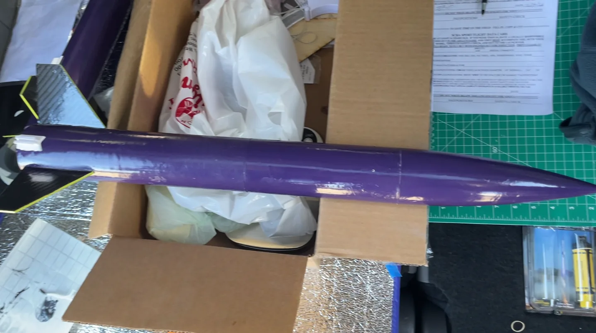

Team engineering · Flight
American Rocketry Challenge
R&D and simulation work for a seven-member engineering team designing, building, and flying a competition rocket — with iterative analysis connected to two qualification flights.
- OpenRocket
- Aerospace
- Simulation
- Teamwork
- Flight testing
- Role
- R&D and Simulation Lead
- Timeline
- Nov 2025 – Mar 2026
- Team
- 7 members
- Tool
- OpenRocket

01 — Overview
Simulation that had to survive launch day.
My role centered on flight simulation and design iteration. I used OpenRocket to evaluate vehicle behavior and help the team develop the rocket around aerodynamic stability and competition constraints.
- Simulated flight accuracy gain
- 23.2%
- Vehicle length
- 25.6in
- Official score
- 139.8
02 — The challenge
Turn a model into a predictable vehicle.
Competition performance depended on more than producing a flyable rocket. The team needed a vehicle whose simulated behavior could guide design decisions and improve the precision of the physical flights.
- Iterate on the vehicle model using OpenRocket.
- Evaluate aerodynamic and stability considerations as the design developed.
- Communicate simulation findings to a seven-member build team.
- Compare the analysis against physical qualification-flight performance.
03 — My contribution
R&D connected to the team build.
Flight analysis
I ran iterative OpenRocket analysis and used the resulting behavior to inform design decisions. The work improved simulated flight accuracy by 23.2%.
Team engineering
I collaborated with six other team members throughout the design and build of the 25.6-inch vehicle, keeping the simulation work grounded in the team’s physical configuration.
Qualification flights
The completed rocket flew twice in competition qualification and recorded an official total score of 139.8.
04 — Flight evidence
From the workbench to two launches.
Videos play on this page. Full channel: @SomeHeresyGaming (opens in a new tab)
05 — Outcome
Better predictions and a complete flight cycle.
The project strengthened my ability to use simulation as a collaborative engineering tool — not just a model. It required translating analysis into shared design decisions, then watching those decisions meet fabrication constraints and real flight conditions.